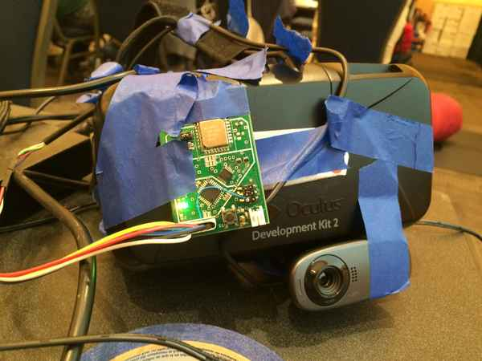
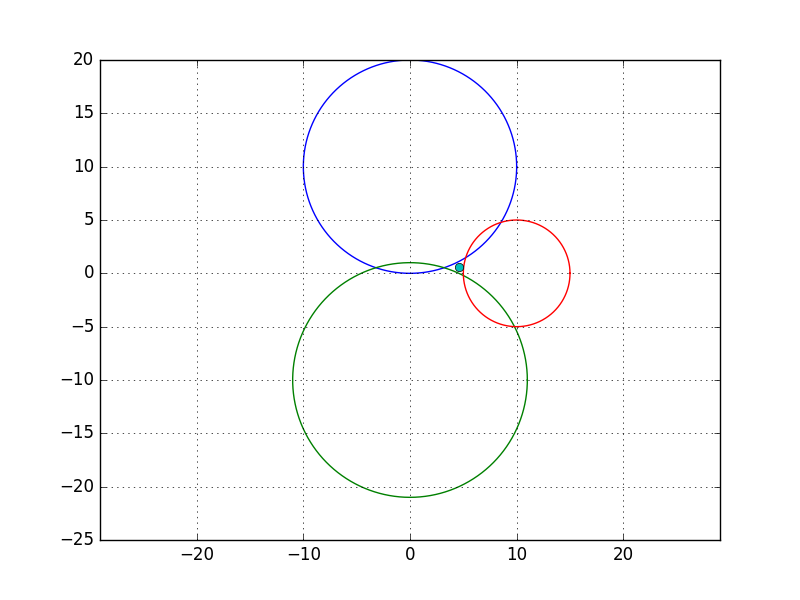

I recently attended the 2017 HackDavis Hackathon at UC Davis. This was the first major collegiate hackathon at this university. I grabbed a buddy, Hengjiu Kang, to work on the ambitious topic of "Long Range Augmented Reality" for 24 hours.

Figure 1. DK2 modified for Long Range AR capabilityThe project was to extend an existing virtual reality (VR) headset to augmented reality (AR) applications and then add "long range" 3D positioning capability. Our idea of long range is in tens of meters. Ideally the system would work in an area as large as a football field and can be extended to cover a whole city. No longer will people be confined to a chair or a room for the use of AR.
The materials used were an Oculus Rift DK2 (lended to us by the hackathon organizers), a simple webcam, and positioning modules we built before the hackathon. Each module contained a precise RF distance sensor with an interface Atmel microcontroller. We used Arduino firmware for rapid development.
We used the Unity environment with the DK2 to create an AR "game." Unity has good integration with the DK2, so it was very easy to get a simple VR up and running. Next, we created an AR effect by mounting a webcam to the front of the DK2, grabbing an image from the webcam, and then applying the image as a texture to a background that moved with the game's camera.
We added positioning by placing three of our custom built modules around the hackathon hall and one on the DK2. The three "satellite" modules only provides 2D positioning, but it was a stepping stone to 3D. The module on the DK2 was able to measure the distance from itself to each of the other modules. This distance information was used to triangulate the position of the module on the DK2.

Figure 2. An example of triangulation with our simple algorithmCalculating the positioning of the tracked module was essentially solving for the intersection of three circles. The circles' radii are the measured distances from the sensors. A challenge of this approach is that real data is quite noisy, so a simple algebraic solution is not practical. The positioning calculation has to deal with data in a fuzzy way to tolerate errors.
The positioning data was passed from the tracked module to Unity through a serial interface. A position is calculated from the positioning data in Unity. The final position is used to move the player's camera around in 3D space in Unity.
During the hackathon, we soldered the boards, wrote firmware for the modules, wrote a serial interface to talk to the modules from Unity, and wrote a simple demo in Unity that used both the DK2 and the webcam. We designed the boards beforehand.
We were not able to achieve reliable 2D positioning, but we completed basic AR with angular tracking and a module-to-Unity interface. The greatest problem was that our triangulation calculation was not robust enough to obtain smooth and correct positioning. There was not enough time to debug the system, but all the building blocks were in place. In the end, we were only demoed the system in 1D (to and from a single satellite module).
I believe that with a little more time, a bit of sensor fusion, and a good trianglulation algorithm, this system could yield new ways of interacting with AR. Maybe this could give us AR on a world scale.
Written on the 12th of May in 2016
The 2016 HackDavis hackathon took place from May 6 to 7, 2016 at the UC Davis campus.
{kind=link}
{kind=link}